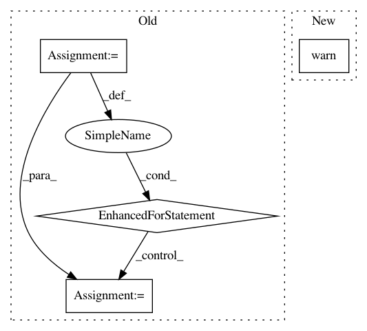

ebe4256914107273feb1da940fc3e4237731365e,nalaf/preprocessing/edges.py,SimpleEdgeGenerator,generate,#SimpleEdgeGenerator#,37
Before Change
def generate(self, dataset):
from itertools import product, chain
for part in dataset.parts():
part.edges = []
for ann_1, ann_2 in product(
(ann for ann in chain(part.annotations, part.predicted_annotations) if ann.class_id == self.entity1_class),
(ann for ann in chain(part.annotations, part.predicted_annotations) if ann.class_id == self.entity2_class)):
index_1 = part.get_sentence_index_for_annotation(ann_1)
index_2 = part.get_sentence_index_for_annotation(ann_2)
if index_1 == index_2 and index_1 is not None:
part.edges.append(
Edge(ann_1, ann_2, self.relation_type, index_1, part))
class WordFilterEdgeGenerator(EdgeGenerator):
Simple implementation of generating edges between the two entities
if they are contained in the same sentence AND the sentence
After Change
def generate(self, dataset):
import warnings
warnings.warn("Use `SentenceDistanceEdgeGenerator` directly. This will be deleted", DeprecationWarning)
super().generate(dataset)
In pattern: SUPERPATTERN
Frequency: 3
Non-data size: 4
Instances
Project Name: Rostlab/nalaf
Commit Name: ebe4256914107273feb1da940fc3e4237731365e
Time: 2016-11-11
Author: i@juanmi.rocks
File Name: nalaf/preprocessing/edges.py
Class Name: SimpleEdgeGenerator
Method Name: generate
Project Name: pysb/pysb
Commit Name: 8c4162c3666a2b238b2b60c3f94bb8102c4ef6cf
Time: 2016-04-05
Author: bachmanjohn@gmail.com
File Name: pysb/kappa.py
Class Name:
Method Name: set_kappa_path
Project Name: nilmtk/nilmtk
Commit Name: 5450357b1f51756786eedb0912ecce70565dd7c4
Time: 2014-11-05
Author: jack-list@xlk.org.uk
File Name: nilmtk/metergroup.py
Class Name: MeterGroup
Method Name: map_meter_instances_to_appliance_ids